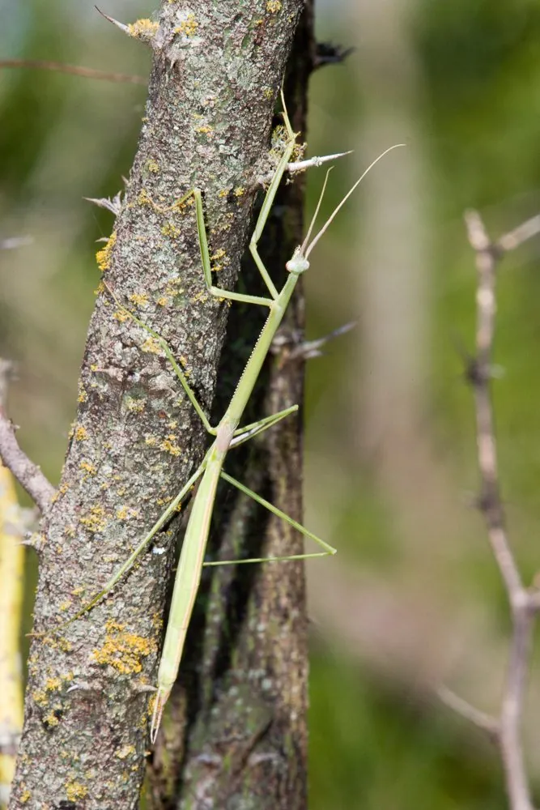

昆虫 · 动物界
树皮螳 Brunneria borealis

身体细长似枯枝的螳螂，几乎只有雌性，靠孤雌生殖繁衍，静止时贴在枝条上几乎完全隐形，分布于北美东南部。
- 分类
- 门节肢动物门纲昆虫纲目螳螂目科螳螂科属树皮螳属
- 栖息环境
- 美国东南部的草地、灌丛和低矮枝条
- 地理分布
- 美国东南部
- 保护级别
- 暂无评估
物种志
树皮螳成虫体长 70–90 mm，身体极度细长，呈灰褐至棕褐色，表面粗糙。前胸背板细长，腹部也不像其他螳螂那样宽扁，整体像一截细树枝。前足为捕捉足，但比一般螳螂细弱。
树皮螳分布于美国东南部的草地和灌丛，是少见的全雌性螳螂：这个物种几乎只有雌性个体，靠孤雌生殖繁殖，卵不需要受精就能孵化，后代全部是雌性。它常静止在灌木枝条或草茎上，把身体紧贴植物，细长的体形和褐色的体色让它几乎完全隐形。树皮螳行动缓慢，捕食飞过的小型昆虫。由于雄虫极为罕见，科学家推测这个物种可能已经以孤雌生殖的方式存在了很长时间。它目前没有受到明显的生存威胁。
形态与习性
- 食性捕食飞过的小型昆虫
- 体长70–90 mm
- 繁殖孤雌生殖，卵无需受精即可孵化
- 性比几乎只有雌性，雄虫极罕见
- 拟态体形细长似树枝，贴附枝条时隐形
- 习性行动缓慢，靠伏击捕食
趣味知识
- 树皮螳几乎全是雌性，卵不需要受精就能孵出后代。
- 它细长的身体像一截枯枝，贴在灌木上时很难被发现。
- 因为雄虫极为罕见，这个物种可能长期靠孤雌生殖延续。